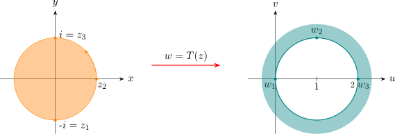

5.10 Linear Fractional Transformations
Let \(a, b,c\) and \(d\) be any real or complex constants. Then the linear fractional transformation (LTF) \(\hspace {0.2cm} w = T(z)\hspace {0.2cm}\) is defined to be the analytic function of the form \[\boxed {w = T(z) = \dfrac {az + b}{cz + d}\hspace {0.5cm} \cdots \hspace {0.5cm} (1)\hspace {0.5cm}\text {with}\hspace {0.3cm} ad - bc \neq 0}\]
This transformation is also called the Mobuis transformation or the Bi linear transformation. This
transformation defines \(w\) uniquely in terms of \(z\), except when \(\hspace {0.2cm} z = \dfrac {-d}{c}\hspace {0.2cm}\) or \(z\) is a point at infinity.
Conversely, \(\hspace {0.3cm} z = T^{-1}(w) = \dfrac {-dw + b}{cw - a}\hspace {0.5cm} \cdots \hspace {0.5cm} (2)\)
and is also a LFT. It defines \(z\) uniquely in terms of \(w\), except at the point \(\hspace {0.2cm} w = \dfrac {a}{c}\hspace {0.2cm}\) which is a point at
infinity.
write (1) as \(\hspace {0.4cm} T(z) = \dfrac {a + \dfrac {b}{z}}{c + \dfrac {d}{z}}\hspace {0.1cm}, \hspace {0.2cm}\) and then define \(\hspace {0.5cm} T(\infty ) = \lim \limits _{z \rightarrow \infty } T(z) = \dfrac {a}{c}\hspace {0.4cm} \cdots \hspace {0.5cm} (3)\)
So it follows that \(\hspace {0.2cm} T^{-1}\Big (\dfrac {a}{c}\Big ) = \infty \).
Similarly, from (2) we get \(\hspace {0.5cm} T^{-1}(\infty ) = \dfrac {-d}{c} \hspace {0.6cm} \cdots \hspace {0.5cm} (4)\)
So that \(\hspace {0.2cm} T\Big (\dfrac {-d}{c}\Big ) = \infty .\hspace {0.2cm}\) In terms of (3) and (4) the LFT \(\hspace {0.2cm} w = T(z)\hspace {0.2cm}\) then provides a one-one correspondence between every point
in the extended complex \(z-\)plane and every point in the extended complex \(w-\)plane.
The need for the condition \(\hspace {0.2cm} ad - bc \neq 0\hspace {0.2cm}\) attached to (1) may be seen by either writing
\[\boxed {T(z) = \dfrac {a}{c} + \Big ( \dfrac {bc - ad}{c}\Big ) \Big (\dfrac {1}{cz + d}\Big )\hspace {0.6cm}\cdots \cdots \hspace {0.5cm} (5)}\]
with \(c\neq 0\) or nothing that \[\boxed {\dfrac {dw}{dz} = \dfrac {ad - bc}{\big (cz + d\big )^2}\hspace {0.5cm}\cdots \hspace {0.5cm} (6)}\]
Condition \(\hspace {0.2cm} bc - ad\neq 0\hspace {0.2cm}\) is necessary that \(T(z)\) should not be degenerate and map every point \(z\) into a single
\(\hspace {0.2cm} w =\dfrac {a}{c}\).
Condition \(\hspace {0.2cm} bc - ad\neq 0 \hspace {0.2cm} \) in (6) ensures that the mapping \(\hspace {0.2cm} w = T(z)\hspace {0.2cm}\) is conformal.
A routine calculation shows that if \(S\) and \(T\) are bilinear transformations then the composition \(\hspace {0.2cm} w = S[T(z)]\hspace {0.2cm}\) is also the
bilinear transformation.
Show!!
Let \(\hspace {0.2cm} S(z) = \dfrac {a_1z + b_1}{c_1z + d_1}\hspace {0.2cm}\) and \(T(z) = \dfrac {a_2z + b_2}{c_2z + d_2}\hspace {0.2cm}\) with \(\hspace {0.2cm} a_1d_1 - c_1d_1 \neq 0\hspace {0.2cm}\) and \(\hspace {0.2cm} a_2d_2 - c_2b_2\neq 0\). Then \begin {align*} SoT(z) & \\ \implies \hspace {0.5cm} S(T(z)) & = \dfrac {a_1\Bigg (\dfrac {a_2z + b_2}{c_2z + d_2}\Bigg ) + b_1}{c_1\Bigg (\dfrac {a_2z + b_2}{c_2z + d_2}\Bigg ) + d_1}\\\\ & = \dfrac {(a_1a_2 + b_1c_2)z + (a_1b_2 + b_1d_2)}{(c_1a_2 + d_1c_2)z + (c_1b_2 + d_1d_2)}\\ \end {align*}
If \(T\) is a LTT, then \(\hspace {0.2cm} T(T^{-1}(z)) = T^{-1}(Tz) = z\hspace {0.2cm}\) i.e \(T^{-1}\) is the inverse of \(T\).
Proposition 5.14. It \(T\) is a LFT, then \(T\) is a composition of translations, magnification and inversions (of course some of these may be missing).
Proof. We have \(\hspace {0.2cm} w = T(z) = \dfrac {az + b}{cz + d}\hspace {0.2cm}\) with \(\hspace {0.2cm} ad - bc \neq 0\).
Suppose that \(c = 0\), then \(\hspace {0.2cm} w = T(z) = \dfrac {az}{d} + \dfrac {b}{d}\hspace {0.1cm}.\hspace {0.2cm}\) We then set
\[T_1(z) = \dfrac {az}{d}\hspace {0.5cm}\text {and}\hspace {0.5cm} T_2(z) = z + \dfrac {b}{d}\]
Then \(\hspace {0.2cm} T = T_2 o T_1\).
Suppose now that \(c \neq 0\), and put
\[T_1(z) = z + \dfrac {d}{c}\hspace {0.2cm}, \hspace {0.8cm} T_2(z) = \dfrac {1}{z}\hspace {0.2cm}, \hspace {0.8cm} T_3(z) = \dfrac {bc -ad}{c^2}z\hspace {0.2cm},\hspace {0.8cm} T_4(z) = z + \dfrac {a}{c}\]
Then \(\hspace {0.2cm} T = T_4oT_3oT_2oT_1\).
The fixed points of (1) follows by solving \( T(z) = z = \dfrac {az + b}{cz + d}\hspace {0.1cm}, \hspace {0.2cm}\) leading to the quadratic equation
\[cz^2 - (a-d)z -b = 0\]
Hence a Mobius transformation has at most two fixed points, unless it is the identity
transformation \(\hspace {0.2cm} w = z\).
Let \(T\) be a LFT and let \(a,b,c\) and \(d\) be distinct points in the extended complex plane \(\overline {\mathbb {C}} = \mathbb {C}_{\infty }\) such that \[\alpha = T(a)\hspace {0.2cm} , \hspace {0.8cm} \beta = T(b)\hspace {0.2cm}, \hspace {0.8cm} \gamma = T(c)\] Suppose also that \(S\) is another LFT such that \[\alpha = S(a)\hspace {0.2cm} , \hspace {0.8cm} \beta = S(b)\hspace {0.2cm}, \hspace {0.8cm} \gamma = S(c)\] \[\text {Then}\hspace {0.5cm} S^{-1}oT(a) = a\hspace {0.2cm}, \hspace {0.9cm} S^{-1}oT(b) = b\hspace {0.2cm}, \hspace {0.9cm} S^{-1}oT(c) = c\] So that \(S^{-1}oT\) is a LFT that has three fixed points. Hence \(S^{-1}oT\) is the identity i.e \[\boxed {S^{-1}oT = I \implies S = T}\]
Hence a LFT is uniquely determined by its action on any three given points in \(\hspace {0.2cm}\mathbb {C}_{\infty }\).
Let \(\hspace {0.2cm} z_1, \hspace {0.2cm} z_2, \hspace {0.2cm} z_3\) and \(z_4\) be any four distinct points in the extended \(z-\)plane with distinct images \(\hspace {0.2cm} w_1, \hspace {0.2cm} w_2, \hspace {0.2cm} w_3\) and \(w_4\) respectively. In the extended \(w-\)plane under the mapping \(w = T(z)\). When these points are finite we have for \(m\neq n\) and \(n,m = 1,2,3,4\) that \(\hspace {0.2cm} w_m - w_n = k(z_m - z_n)\hspace {0.2cm}\) with \[\boxed {k = \dfrac {ad - bc}{\big (cz_m + d\big )\big (cz_n + d\big )}}\] from this we see that
\[\dfrac {\big (z_1 - z_4\big )\big (z_3 - z_2\big )}{\big (z_1 - z_2\big )\big (z_3 - z_4\big )} = \dfrac {\big (w_1 - w_2\big )\big (w_3 - w_2\big )}{\big (w_1 - w_2\big )\big (w_3 - w_4\big )}\hspace {0.6cm}\cdots \hspace {0.5cm}(*)\]
The expression \((*)\) is called the cross ratio of the four points \(z_1, z_2, z_3, z_4\) and is denoted by \(\hspace {0.2cm}\big (z_1, z_2, z_3, z_4\big )\hspace {0.2cm}\).
Thus we see that the cross ratio of \(z_1, z_2, z_3, z_4\) is the same as the cross ratio of the corresponding images \(\hspace {0.2cm} w_1, w_2, w_3, w_4\hspace {0.2cm}\)
i. e \(\hspace {0.2cm} \big (w_1, w_2, w_3, w_4\big )\).
If one of the points in the \(z-\)plane or \(w-\)plane is the point at infinity then the quotient involving that
point is replaced by 1.
For suppose \(\hspace {0.2cm} z_3 ={\infty }\hspace {0.2cm}\), then
\[\lim \limits _{z_3\rightarrow \infty } \dfrac {\big (z_1 - z_4\big )\big (z_3 - z_2\big )}{\big (z_1 - z_2\big )\big (z_3 - z_4\big )} = \dfrac {z_1 - z_4}{z_1 - z_2}\]
Replacing \(z_4\) and \(w_4\) in \((*)\) by the variables \(z\) and \(w\) respectively define \(w\) in terms of \(z\) and hence \(\hspace {0.2cm} w = T(z) \hspace {0.2cm}\) by means of the three points \(\hspace {0.2cm} z_1, z_2, z_3\hspace {0.2cm}\) and the prescribed images \(\hspace {0.2cm}w_1, w_2, w_3\). Thus we have. □
Theorem
5.10.1 Mapping Derived from Cross-Ratio
Let \(\hspace {0.2cm}z_1, z_2, z_3\hspace {0.2cm}\) be points in the \(z-\)plane with images \(\hspace {0.2cm}w_1, w_2, w_3\hspace {0.2cm}\) in the \(w-\)plane. Then the unique LFT \(\hspace {0.2cm} w = T(z)\hspace {0.2cm}\) which accomplishes this
mapping is given from the cross ratio by
\[\dfrac {\big (w - w_1\big )\big (w_2 - w_3\big )}{\big (w - w_3\big )\big (w_2 - w_1\big )} = \dfrac {\big (z - z_1\big )\big (z_2 - z_3\big )}{\big (z - z_3\big )\big (z_2 - z_1\big )}\hspace {0.6cm}\cdots \hspace {0.5cm} (**)\]
and then solving for \(\hspace {0.2cm} w\).
Example 5.15. Find the LFT that maps the points \(\hspace {0.2cm} -i, \hspace {0.1cm} 1,\hspace {0.1cm} i\) in the \(z-\)plane onto the respective points
\(\hspace {0.2cm} 0,\hspace {0.1cm} 1 + i,\hspace {0.1cm}2 \hspace {0.1cm}\) in the \(w-\)plane.
Determine the region in the \(w-\)plane which is the image of the interior of the circle defined by the
three points in the \(z-\)plane.
Solution
Set \(\hspace {0.2cm} z_1 = -1,\hspace {0.2cm} z_2 = 1, \hspace {0.2cm} z_3 = i\hspace {0.2cm}\) and \(\hspace {0.2cm} w_1 = 0,\hspace {0.2cm} w_2 = 1 + i, \hspace {0.2cm}\) and \(\hspace {0.2cm} w _3 = 2\)
Replacing in the cross-ratio \((**)\) we get
\[ w = T(z) = \dfrac {z + i}{z}\]
The points \(\hspace {0.2cm} z_1 = -1,\hspace {0.2cm} z_2 = 1, \hspace {0.2cm} z_3 = i\hspace {0.2cm}\) define a circle \(\hspace {0.2cm} \left |z\right | = 1\).
While their images \(\hspace {0.2cm} w_1 = 0,\hspace {0.2cm} w_2 = 1 + i, \hspace {0.2cm}\) and \(\hspace {0.2cm} w _3 = 2\hspace {0.2cm}\) define the circle \(\hspace {0.2cm}\left |w - 1\right | = 1\).

The interior of the circle \(\hspace {0.2cm}\left |z\right | = 1\hspace {0.2cm}\) is mapped onto the exterior of the circle \(\hspace {0.2cm}\left |w - 1\right |=1\hspace {0.2cm}\) in the \(w-\)plane.
This is because the LFT is conformal and so maintains the orientation.
Example 5.16. Show that the line \(\hspace {0.2cm} 3y = x\hspace {0.2cm}\) is mapped onto the circle under the LFT \(\hspace {0.2cm} w = \dfrac {iz + 2}{4z + i}.\) Find the centre
and radius of the circle.
\(\big [\)Hint: Write \(x\) and \(y\) in terms of \(u, v\) and use \(\hspace {0.2cm} 3y = x \big ]\)
Example 5.17. Find the LFT which maps
- (a).
- \(\hspace {0.2cm} - 1, \hspace {0.2cm} 0, \hspace {0.2cm} 1\hspace {0.2cm}\) onto \(\hspace {0.2cm} 0, \hspace {0.2cm} i, \hspace {0.2cm} 3i\)
- (b).
- \(\hspace {0.2cm} i, \hspace {0.2cm} 1, \hspace {0.2cm} -1\hspace {0.2cm}\) onto \(\hspace {0.2cm} 1, \hspace {0.2cm} 0, \hspace {0.2cm} \infty \)
respectively.
Solution \[\dfrac {\big (w - w_1\big )\big (w_2 - w_3\big )}{\big (w - w_3\big )\big (w_2 - w_1\big )} = \dfrac {\big (z - z_1\big )\big (z_2 - z_3\big )}{\big (z - z_3\big )\big (z_2 - z_1\big )}\]
- (a).
- So, we have that \(\hspace {0.2cm} z_1 = 1,\hspace {0.2cm} z_2 = 0, \hspace {0.2cm} z_3 = 1\hspace {0.2cm}\) and \(\hspace {0.2cm} w_1 = 0, \hspace {0.2cm} w_2 = i\hspace {0.2cm} w_3 = 3i\).
\[\implies \hspace {0.2cm} \dfrac {\big (z - z_1\big )\big (z_2 - z_3\big )}{\big (z - z_3\big )\big (z_2 - z_1\big )} = \dfrac {(z + 1) (-1)}{(z - 1) (+ 1)} = \dfrac {-(z + 1)}{(z - 1)} \]
and \[\dfrac {\big (w - w_1\big )\big (w_2 - w_3\big )}{\big (w - w_3\big )\big (w_2 - w_1\big )} = \dfrac {(w - 0)(-2i)}{(w - 3i)(3i)} = \dfrac {(-2i)w}{3i(w - 3i)}\] \begin {align*} \implies \hspace {0.4cm} \dfrac {z + 1}{z - 1} & = \dfrac {2w}{3 (w - 3i)}\\\\ \implies \hspace {0.4cm} 3wz - 9zi + 3w - 9i & = 2wz - 2w\\ \implies \hspace {0.4cm} w & = \dfrac {9i ( z + 1)}{(z + 5)} \end {align*}
Therefore, \(\hspace {0.2cm} w = \dfrac {9i( z+ 1)}{z + 5}\)
- (b).
- We have that \(\hspace {0.2cm} z_1 = i, \hspace {0.2cm} z_2 = 1, \hspace {0.2cm} z_3 = 0\hspace {0.2cm}\) and \(\hspace {0.2cm} w_1 = 1, \hspace {0.2cm} w_2 = 0, \hspace {0.2cm} w_3 = \infty \)
\[\implies \lim \limits _{w_3\rightarrow \infty }\hspace {0.3cm}\dfrac {\big (w - w_1\big )\big (w_2 - w_3\big )}{\big (w - w_3\big )\big (w_2 - w_1\big )} = \dfrac {w - w_1}{w_2 - w_1}\]
\[\implies \hspace {0.3cm} \dfrac {w - w_1}{w_2 - w_1} = \dfrac {w - 1}{-1} = -(w- 1)\]
\[\implies \hspace {0.3cm}\dfrac {\big (z - z_1\big )\big (z_2 - z_3\big )}{\big (z - z_3\big )\big (z_2 - z_1\big )} = \dfrac {(z - i)(1)}{(z)(1-i)} = \dfrac {(z - i)(1 + i)}{2z}\]
\(\implies \hspace {0.3cm} -(w - 1)= \dfrac {(z - i)(1 + i)}{2z}\)
\(\implies \hspace {0.4cm} T(z) = w = 1 - \dfrac {(z - i)(1 + i)}{2z}\)
Example 5.18. Find a LFT that maps the crescent-shaped region that lies inside the circle \(\hspace {0.2cm} \left |z - 2\right | < 2\hspace {0.2cm}\)
and outside the circle \(\hspace {0.2cm} \left |z - 1\right | > 1\hspace {0.2cm}\) onto a horizontal strip in the upper half plane.
\(\big [\) Choose points \(\hspace {0.2cm} z_1 = 4, \hspace {0.2cm} z_2 = 2 + 2i, \hspace {0.2cm}\) and \(\hspace {0.2cm} z_3 = 0\hspace {0.2cm}\) on \(\hspace {0.2cm}\left |z - 2\right | = 2\hspace {0.2cm}\) and \(\hspace {0.2cm} w_1 = 0, \hspace {0.2cm} 1, \hspace {0.2cm}\\ w_3 = \infty \big ]\hspace {0.2cm}\) Horizontal strip \(\hspace {0.2cm} v = 1, \hspace {0.2cm} v = 0, \hspace {0.2cm} u>0\).